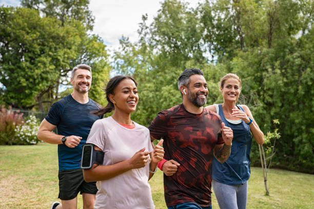

Mijn naam is Stefanie Bergshoeff. Met een passie voor
persoonlijke groei en welzijn, help ik je graag om belemmeringen
te overwinnen en je volledige potentieel te bereiken. Ik ben een
ervaren coach en therapeut, gespecialiseerd in het herstellen
van de balans tussen lichaam en geest.
Mijn aanpak is persoonlijk, empathisch en gericht op duurzame
verandering. Samen ontdekken we jouw unieke pad naar een leven
vol kracht en sereniteit.
Mijn Werkwijze als Coach
Intake & Doelstelling
We starten met een vrijblijvend kennismakingsgesprek. Hierin
bespreken we jouw huidige situatie, uitdagingen en waar je
naartoe wilt groeien.
Traject & Actieplan
Samen stellen we een persoonlijk coachingstraject op met
concrete, haalbare doelen en een duidelijk actieplan om deze te
bereiken.
Reflectie & Integratie
Gedurende het traject reflecteren we regelmatig op je voortgang.
We vieren successen en zorgen voor duurzame integratie van
nieuwe inzichten.
×
Intake & Doelstelling: Jouw Startpunt
De eerste stap in ons coachingstraject is een uitgebreid en
vrijblijvend intakegesprek. Dit gesprek is bedoeld om elkaar beter
te leren kennen en een helder beeld te krijgen van jouw huidige
situatie. We staan stil bij:
Jouw huidige situatie: Waar loop je tegenaan? Wat
zijn je huidige patronen en overtuigingen?
Jouw wensen en verlangens: Waar droom je van? Wat
zou je willen bereiken op persoonlijk en/of professioneel vlak?
Jouw energiegevers en -nemers: Wat geeft je
kracht en wat kost je juist energie?
Eerdere ervaringen: Wat heb je al geprobeerd en
wat werkte wel of niet voor jou?
Op basis van dit gesprek formuleren we samen concrete, meetbare,
acceptabele, realistische en tijdgebonden (SMART) doelen. Deze
doelen vormen de leidraad voor ons verdere traject. Het is
belangrijk dat jij je volledig kunt vinden in deze doelen en dat ze
aansluiten bij wie jij bent en wat jij wilt bereiken. Een goede klik
en wederzijds vertrouwen zijn essentieel voor een succesvol
coachingstraject.
×
Traject & Actieplan: Jouw Pad naar Groei
Nadat we je doelen helder hebben, ontwerpen we een persoonlijk
coachingstraject. Dit traject is volledig afgestemd op jouw
behoeften, tempo en leerstijl. We maken een concreet actieplan met
duidelijke stappen die je gaat zetten. Tijdens de coachingsessies
werken we aan:
Bewustwording: Inzicht krijgen in je eigen
gedrag, gedachten, gevoelens en overtuigingen.
Belemmeringen aanpakken: Obstakels identificeren
en strategieën ontwikkelen om deze te overwinnen.
Nieuwe vaardigheden ontwikkelen: Leren van nieuwe
tools en technieken die je helpen je doelen te bereiken (bijv.
timemanagement, communicatievaardigheden, grenzen stellen).
Krachtbronnen aanboren: Ontdekken en benutten van
jouw innerlijke kracht en talenten.
Concrete actie: Tussen de sessies door ga je aan
de slag met opdrachten en oefeningen die passen bij jouw proces.
Ik maak gebruik van diverse coachingmethodieken en -technieken,
afgestemd op wat jij op dat moment nodig hebt. Denk hierbij aan
oplossingsgericht coachen, NLP (Neuro Linguïstisch Programmeren),
systemisch werk, mindfulness en energetische oefeningen. Regelmatige
evaluatie zorgt ervoor dat we op koers blijven en het traject
eventueel bijstellen waar nodig.
×
Reflectie & Integratie: Verankering van Succes
Reflectie is een cruciaal onderdeel van het coachingproces.
Gedurende het hele traject, en zeker aan het einde, staan we stil
bij jouw ontwikkeling en de stappen die je hebt gezet. We kijken
naar:
Behaalde resultaten: Welke doelen heb je bereikt?
Welke veranderingen heb je doorgemaakt?
Geleerde lessen: Welke nieuwe inzichten heb je
opgedaan over jezelf en je omgeving?
Successen vieren: Het erkennen en vieren van je
vooruitgang, hoe klein ook, is belangrijk voor je motivatie en
zelfvertrouwen.
Uitdagingen en hoe je daarmee omging: Hoe heb je
obstakels overwonnen en wat heb je daarvan geleerd?
Het doel is niet alleen om je doelen te bereiken, maar ook om de
nieuwe inzichten, vaardigheden en gedragspatronen duurzaam te
integreren in je dagelijks leven. We bespreken hoe je zelfstandig
verder kunt en hoe je eventuele toekomstige uitdagingen het hoofd
kunt bieden. Soms plannen we na enige tijd een opvolgsessie om de
voortgang te bespreken en de verankering te ondersteunen.
Wat mensen zeggen.
"Dankzij Stefanie heb ik grote stappen kunnen zetten in
mijn persoonlijke ontwikkeling. Haar aanpak is warm en
effectief."
- Anna V.
"De Reiki behandelingen hebben mij enorm geholpen om rust
te vinden in een stressvolle periode. Een aanrader!"
- Mark S.
"Ik voel me energieker en meer in balans sinds ik bij
Stefanie kom. Zeer professioneel en prettig."
- Linda K.
"Een hele fijne en integere coach. Stefanie luistert echt
en helpt je verder op je pad. Ik kom zeker terug!"
- Jeroen P.
Laatste Blogartikelen

Tips voor meer energie in je dagelijks leven
Ontdek eenvoudige manieren om je vitaliteit te verhogen en
vermoeidheid tegen te gaan...


![[Gedetailleerd beeld van een intakegesprek]](images/werkwijze-intake-detail.jpg)
![[Gedetailleerd beeld van een actieplan]](images/werkwijze-traject-detail.jpg)
![[Gedetailleerd beeld van reflectie]](images/werkwijze-reflectie-detail.jpg)